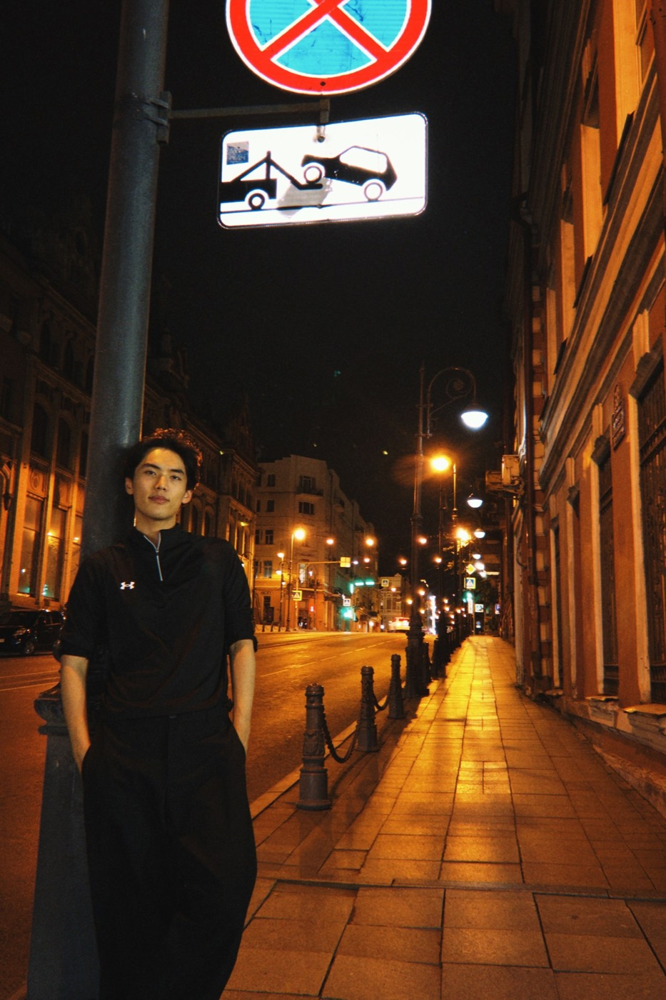
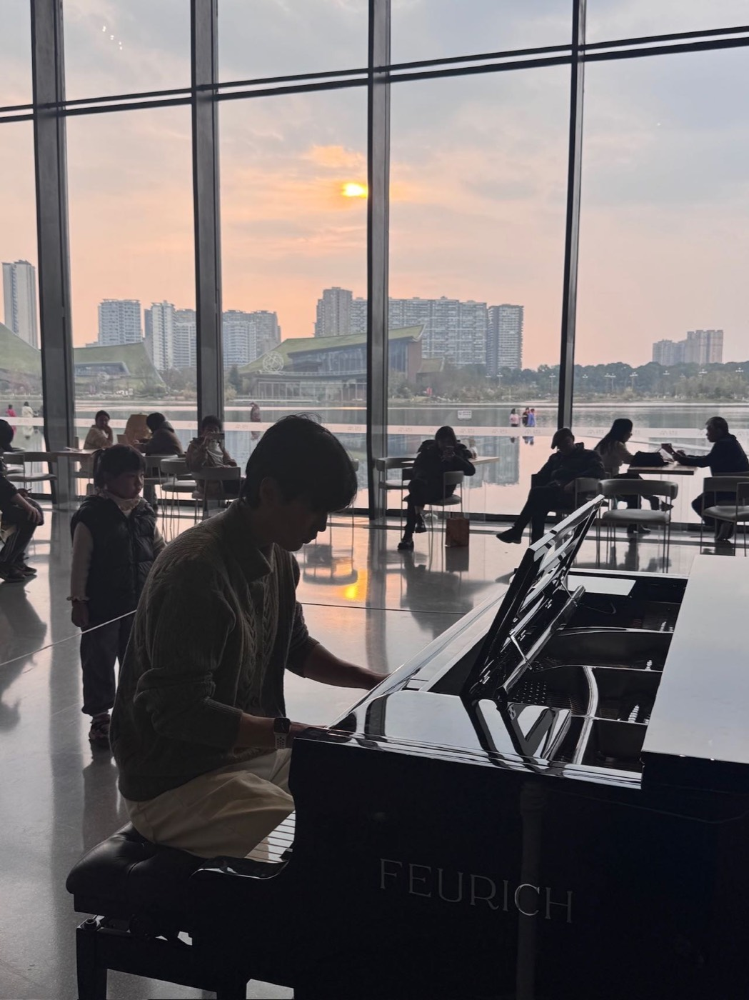
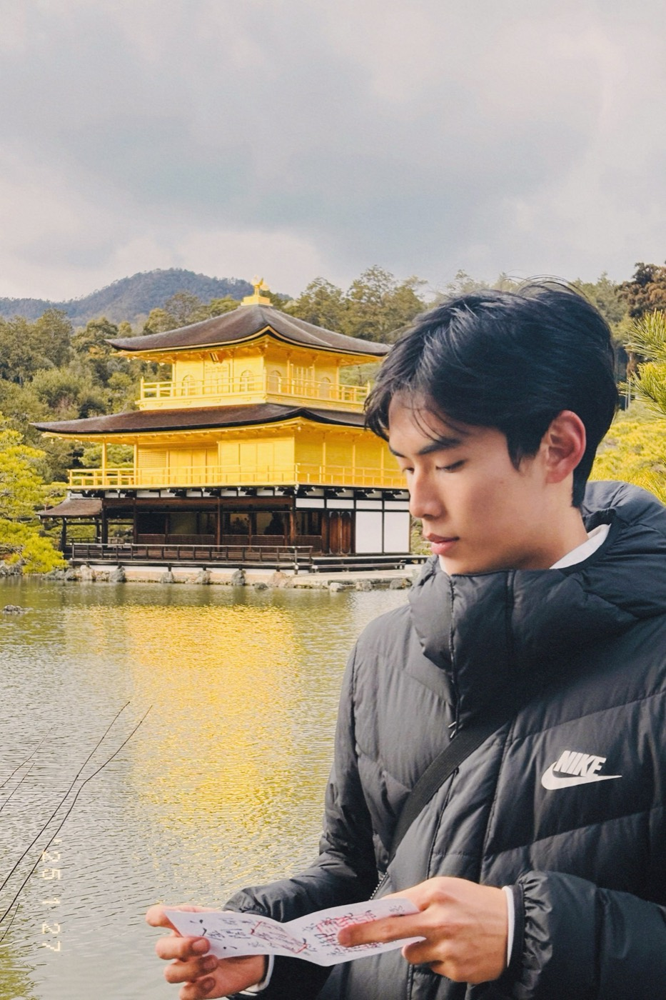

那些走着走着，就记住了的瞬间。
01 / TUNE INTO MY WORLD
生活不止一种声部。
点选一个频率，
认识我的另一个侧面。
MY FREQUENCIESFM 01
轻触圆盘切换 · 也可用方向键选择

声音之外，也有音乐。VOICE / 表达练习
让声音，
有自己的温度。
从早功、朗诵到自媒体创作，练习把感受变成表达。也在音乐里，听见语言之外的情绪。
播音主持 · 朗诵 · 自媒体创作
02 / NOTES TO MYSELF
写下来，就没有白白经过。
从 Notion 里拾起的几页。
关于喜欢、坚持，与新的出发。

选自个人日记 · 点击展开摘录与整理
ONE WORLD. MORE WAYS TO SAY HELLO.
多一种语言，
多一扇窗。
用普通话表达自己，用英语连接世界。
西班牙语，是正在打开的下一扇窗。
你好。
很高兴，在这里遇见你。
普通话 / 我的表达起点03 / LITTLE THINGS, REAL LIFE
把喜欢的瞬间，留下来。
把身体练强一点／把语言学深一点／把每顿饭吃好一点
04 / MY PRIVATE CINEMA
三部电影。三种世界。
我的偏爱片单。
点一部，让画面换一个节奏。
非线性叙事 / 交错的片段视觉联想 · 原创动效